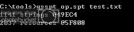
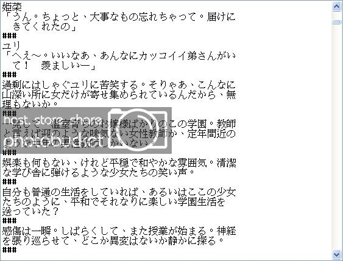
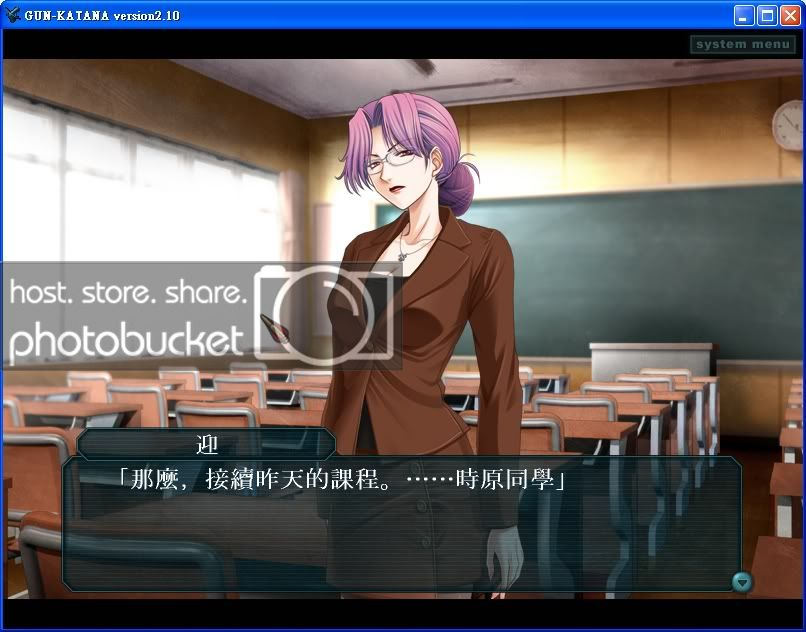
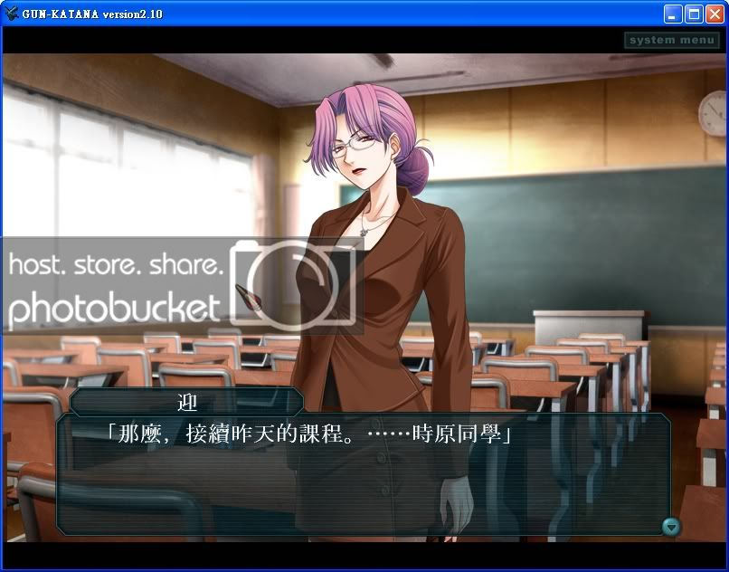

对
BlackCYC社的作品情有独钟，碰巧遇到国外人士正在进行Ｂ社的一款游戏-
Gore screaming show进行翻译
而开发出了"gsspt"这一个可以抓出游戏文字档（副档名为spt者）的解包及封包程序
Gore screaming show国外翻译计划（gsspt在最底下的Script dumper/reinserter+fixed exe: v0.01中，抓下来解压缩里面有个tools资料夹，内部的gsspt.exe就是了）：
http://tlwiki.tsukuru.info/index.php?title=Gore_Screaming_Show然而B社的游戏都是以一个称为SystemNNN的平台开发的，这个平台的文本档案皆为.spt档
这时我就想，是否可用这个程序对其他B社的作品进行翻译
初步的实验结果是肯定的
先介绍一下gsspt的使用方法：
先把你要翻译的文本（也就是.spt档）丢到与gsspt.exe同一个资料夹，然后开启console window，利用指令输入输出
例如，我要翻一个叫做op.spt的文件，而我的gsspt.exe位于c:\tools里
首先解包op.spt，这个范例将解包后的文件称为test.txt（档名随便，只要副档名为txt就好），就要输入"gsspt op.spt test.txt"，如下图
这时c:\tools资料夹内会生成一个test.txt档，打开后大略会长的像这样，可以看到这些就是游戏文本了
然后就进行文本翻译，完成后，要再进行封包，在console window 输入”gsspt test.txt op.spt”刚刚修改的内容就会写入spt档了

我试着对B社的
GUN-KATANA（铳刀）Non-Human-Killer进行初步的翻译
B社那么多款游戏，为什么要选这个？毕竟这是GalGame业界第一款第一人称射击游戏，抱着尊敬的态度试着翻翻看@@
底下为部份成果，嫌太少？抱歉整个翻译过程只有我一个人在进行，而且看发文数也知道是个新手，没有找组员的号召力。
 

目前所有翻译部分的影片：
http://www.youtube.com/watch?v=WL0HR3clOyw乍看之下并无问题...才怪！
首先为什么是用繁体字，那是因为许多字用简体字输入，封包后会出现一个?号，
想说繁体字字库在日文汉字中较多，所以实验看看，果然可成
然而如果大家有注意到的话，某些语句的用法是十分诡异的
这就是另一个大问题，就算转为繁体，我们的常用字在日文汉字是不存在的。
所以如"你"、" 吗"、"呢"、"啊"、"闲"还有许许多多的字都打不出来
只能利用"矣"、"捏"之类的字，或是同意的词进行翻译，
这样造成翻译上的极大不便，因为每次都要在编码后重新输出，检查有没有"?"，然后重新想别的词代替
更别说将来要将其转为大家较适应的简体字了。
我想这大概是系统为日文编码的原因，不知是否有办法将其编码系统转换为简体字，亦或是繁体字？
预先感谢诸位高手前辈的回答！